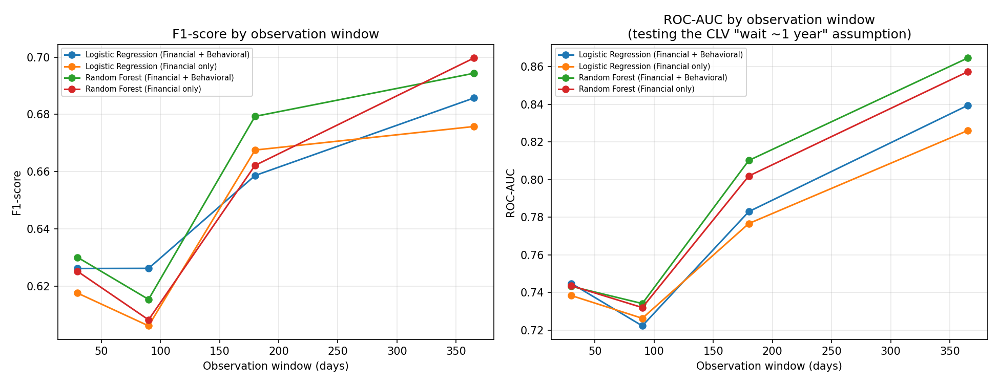

Early Prediction of High-Potential Banking Customers
The question
Banks conventionally wait close to a year of transaction history before confidently identifying which new customers will become high-value. But behavioral science suggests habits stabilize within weeks — so does a bank really need to wait that long? This project tests whether 30, 90, 180, or 365 days of early transaction data can predict future customer value as reliably as the traditional long-window approach.
Dataset & method
PKDD'99 Czech Financial Dataset (the "Berka dataset") — 4,500 real, anonymized bank accounts, 1993-1998, over 1 million transactions across 7 relational tables. Behavioral features (transaction frequency, monetary activity, balance trends, and five habit-formation features grounded in cited psychology literature) were engineered strictly from within each observation window, with the target label built only from a separate post-window period — no information leakage between predictor and target. Logistic Regression and Random Forest were trained with a temporal, cohort-based train/test split (not a random split, since this is a time-ordered problem).
Key finding

| Window | Model | Feature set | Accuracy | F1 | ROC-AUC |
|---|---|---|---|---|---|
| 90 days | Random Forest | Financial + Behavioral | 0.667 | 0.615 | 0.734 |
| 180 days | Random Forest | Financial + Behavioral | 0.737 | 0.679 | 0.810 |
| 365 days | Random Forest | Financial only | 0.776 | 0.700 | 0.857 |
Full results across all four windows and both models are in results/model_results.csv in the repository.
Why it matters
Average account balance and transaction inflow volume emerged as the strongest predictors — ahead of raw transaction frequency. This gives banks a practical, evidence-based basis for assessing new customers around the six-month mark instead of waiting a full year, enabling earlier, more targeted engagement.
Limitations (stated directly)
- No open, transaction-level African banking dataset was available at the time of this study; replicating it on African transaction or mobile-money data is flagged as future work.
- The dataset spans 1993-1998 — banking behavior has evolved, though the underlying behavioral principles tested remain relevant.
- This project predicts who to act on, not whether acting on them changes outcomes — that requires a separate field experiment.
Repository
Full code, notebook, and results: projects/msc-banking-prediction/ in this repository
(github.com/leesey15) —
src/01_load_preprocess.py through 05_threshold_sensitivity.py, plus the full pipeline
notebook.